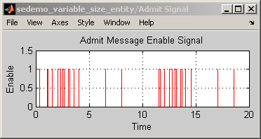
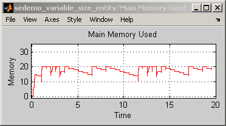
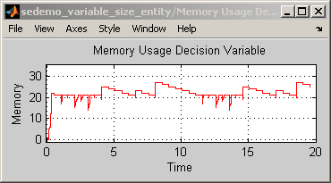
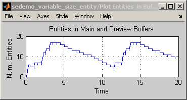

Buffering for Variable-Size Messages
Contents
Overview
This model demonstrates how a buffer can store messages that occupy a variable amount of memory. Entities represent the messages and possess attributes called length. A FIFO Queue block represents the buffer. Although the queue block in this model has no limit on its capacity, the preceding Enabled Gate block, labeled Admit Message, restricts entry to the buffer as necessary. This block depends on numerical and logical computations in the Preview Buffer Read Length and Buffer Size Controller subsystems, which determine whether the buffer can accommodate a new message based on the lengths of the new message and of the messages in the buffer.
This model demonstrates two alternative strategies, one that checks the length of a message before determining whether the buffer has enough space for it, and one that admits messages to the buffer first and reacts to the additional length afterward. Using the block labeled Enable Preview Buffer, you can configure the model to implement one strategy or the other. The results are similar, but not identical.
Structure
Reading the Length Before the Message Enters the Buffer
By default, the simulation uses an early reading of the message length when performing computations. The overall strategy is to check the length and the memory available in the buffer before permitting the message into the buffer. The simulation behaves as follows:
- When a new message arrives at the Preview Buffer Read Length subsystem, the subsystem stores the message temporarily and updates the early signal to reflect the length of the message.
- The Buffer Size Controller subsystem adds the length to its cumulative total.
- The update in the total causes the Control Space Usage subsystem to check whether the buffer has any available memory. The computation involves the previously computed total of the lengths of the messages that have exited the buffer during the simulation (sub signal).
If the early total minus the sub total is less than a buffer size threshold plus 1, then the block labeled Admit Message permits the message to advance to the buffer. Otherwise, the message stays in the Preview Buffer Read Length subsystem until an update in the sub signal indicates that enough memory is available in the buffer.
Reading the Length After the Message Enters the Buffer
If you change the block labeled Enable Preview Buffer so it connects to 0 instead of 1, then the simulation uses a late reading of the message length when performing computations. The overall strategy is to check for memory in the buffer after the message has entered, and use an above-threshold situation to restrict the next message. The simulation behaves as follows:
- When a new message arrives at the Preview Buffer Read Length subsystem, the subsystem either stores the message or forwards it to the buffer, depending on whether the block labeled Admit Message permits or forbids advancement. If the subsystem stores the message, the message has an opportunity to advance after an update in the sub signal indicates that enough memory is available in the buffer.
- After the message advances to the buffer, the Preview Buffer Read Length subsystem updates the late signal to reflect the length of the message.
- The Buffer Size Controller subsystem adds the length to its cumulative total of the late signal.
- The update in the late total causes the Control Space Usage subsystem to check whether the late total minus the sub total is less than a buffer size threshold. If so, the block labeled Admit Message opens so that the next message can advance to the buffer. Otherwise, the next message stays in the Preview Buffer Read Length subsystem until or unless an update in the sub signal indicates that enough memory is available in the buffer..
Results and Displays
By default, the model includes these visual ways to understand its performance:
1) A scope showing the amount of buffer memory used in the computation in the Control Space Usage subsystem.
- If the preview buffer is enabled, the quantity in the scope differs from the buffer memory actually in use because the computation includes the length of a newly arrived message before it advances to the buffer.
- If the preview buffer is disabled, the quantity in the scope matches the buffer memory actually in use because the computation includes only messages in the buffer.
2) A scope showing the amount of buffer memory that messages actually occupy. When the simulation uses the early reading technique, this signal does not exceed the buffer size threshold. When the simulation uses the late reading technique, this signal can exceed the buffer size threshold; when this occurs, the block labeled Admit Message forbids the next message to advance to the buffer until the buffer usage decreases sufficiently.
3) A scope showing the number of messages in either the buffer or the Preview Buffer Read Length subsystem, at any given time during the simulation (noncumulative).
4) A scope showing the state of the block labeled Admit Message. When the enable signal is 1, a message in the Preview Buffer Read Length subsystem can advance to the buffer. When the enable signal is 0, the message cannot advance.
   